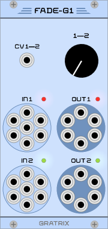
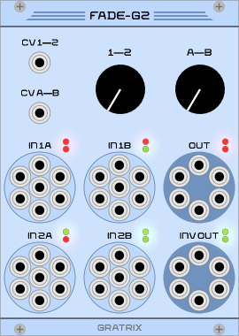

VCV Rack Modules
by Sam Gratrix - Page under construction and modules in development! |
 |
 |
 |
|||||||
 |
 |  |  |
 |
||||||
 |
||||||||||
Introduction
Comming soon.
Modules
Oscillators and Filters
- VCO-F1 is a six voice straight clone of Fundamental VCO-1.
- VCO-F2 is a six voice straight clone of Fundamental VCO-2.
- VCF-F1 is a six voice straight clone of Fundamental VCF.
Amplifiers and Envelopes
- VCA-F1 is a six voice straight clone of the Fundamental VCA with a basic mixer to combine
the voices to single outputs.
TODO: Complete UI for mixer section. - ENV-F1 is a six voice straight clone of the Fundamental ADSR with an additional inverted output.
Faders
- FADE-G1 is a two input six voice one-dimensional fader.
- FADE-G2 is a four input six voice two-dimensional fader.
Generators
- OCTAVE quantises the input to 12-ET and provides an octaves-worth of ouput with the input value
used as the fundamental. Additionally, several whole-octave transpositions of the input are also provided at output.
TODO: Complete UI. - ... is a ...
Interfaces
- MIDI-C1 is a six voice straight clone of the Core Quad MIDI-to-CV Interface.
Blanks
- Simple do nothing 3-hole high quality blank.
- Simple do nothing 6-hole high quality blank.
- Simple do nothing 9-hole high quality blank.
- Simple do nothing 12-hole high quality blank.
Download
Comming soon.